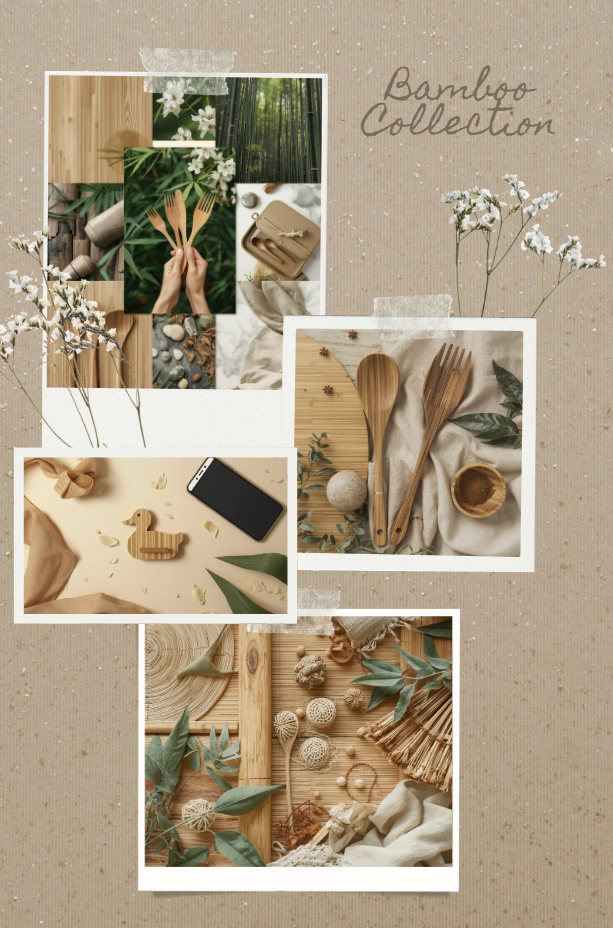

Moodboard généré avec l’IA
On part d’un moodboard créé avec le MCP Canva AI : textures de bambou, marbre clair, lumière dorée. C’est lui qui dicte les courbes et la scène du produit.
Moodboard imaginé avec
 ×
×

×
